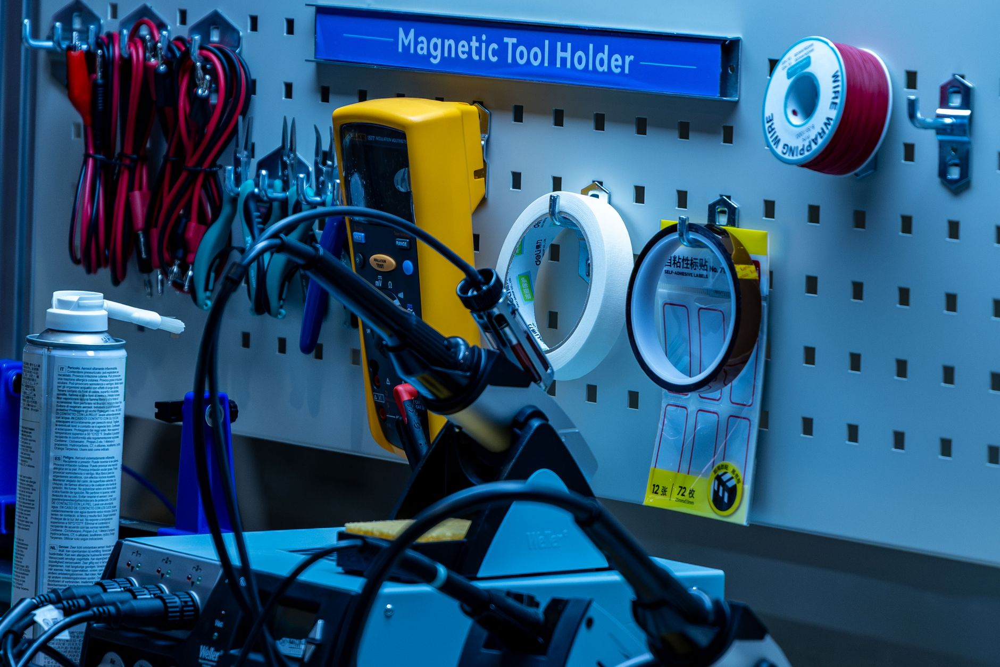

中 핵심광물 통제, AI·로봇 소재로 전선 확대

[자료사진] 기사와 무관한 이미지입니다.
중국은 2023년 8월 갈륨·게르마늄 수출허가제를 발동한 이후 2024년 안티몬·흑연, 2025년 텅스텐·인듐을 순차적으로 통제 품목에 추가했다. 2026년 현재 통제 대상은 총 16개 품목으로 늘었으며, 이 중 산업용 로봇 액추에이터에 쓰이는 네오디뮴 자석 원료 디스프로슘이 신규 편입 검토 단계에 있다는 정황이 공급업계에 포착됐다.
중국 상무부는 2025년 희토류 영구자석 수출 쿼터를 전년 대비 18% 축소했다. 독일 KION·일본 야스카와·한국 HD현대로보틱스 등 글로벌 로봇 3사 모두 네오디뮴계 자석을 서보모터 핵심 부품으로 사용하며, 중국산 의존도는 각각 70~85% 수준이다. 납기는 2025년 초 8주에서 현재 22주로 늘었다.
갈륨 현물가는 2023년 8월 kg당 220달러에서 2026년 10월 기준 약 1,950달러로 8.9배 올랐다. GaN(질화갈륨) 기반 전력반도체를 생산하는 파워인티그레이션스·인피니언·ST마이크로는 2026년 1분기 실적 발표에서 갈륨 원가 비중이 전체 소재 원가의 12~17%를 차지한다고 밝혔다. 한국 내 GaN 파워소자 스타트업 기준으로는 제품 원가의 20% 이상이 갈륨 조달 비용으로 확인된다.
이번 전선 확대의 핵심은 '가격 충격'에서 '공급량 자체의 통제'로 무게중심이 이동했다는 점이다. 2023~2024년에는 가격 폭등이 주된 타격 수단이었다면, 2025년 이후에는 허가 발급 지연—평균 45~60일—을 통해 재고 주기를 흔드는 방식이 병행되고 있다. 실제로 한국 디스플레이 소재 업계에서는 인듐 허가 지연으로 ITO 타겟 재고가 표준 4주 분에서 6주 분으로 늘어난 사례가 복수 확인됐다.
공급망 통제의 전장이 반도체에서 로봇으로 옮겨간다는 것은, 중국이 '제조 2025' 이후 2030년 서비스·제조용 로봇 세계 점유율 40% 목표를 위한 전략적 완충재를 확보하는 단계임을 시사한다. 디스프로슘과 네오디뮴 자석 공급을 통제하면 경쟁국 로봇 원가를 끌어올리면서 자국 로봇 산업을 보호하는 효과가 동시에 발생한다.
한국 입장에서는 반도체 소재 병목과 로봇 소재 병목이 동일한 공급자(중국)로부터 동시에 압박받는 구조가 고착화되고 있다. 산업부가 2026년 1,700억 원 소부장 지원을 발표했지만, 이 예산의 대부분은 반도체·디스플레이 소재에 집중돼 있으며 희토류 자석 내재화 항목은 전체 지원금의 7% 미만으로 추정된다.
일본은 TDK·신에츠화학·TDK-Lambda를 통해 네오디뮴 자석 내재화율이 이미 60%를 넘어섰다. 아울러 JOGMEC(일본 석유천연가스금속광물자원기구)이 호주 마운트웰드 희토류 광산 지분 15%를 2025년 3월 취득하며 중국 우회 조달 경로를 확보했다. 일본 로봇 업체들은 원가 충격을 상대적으로 덜 받는 구조다.
미국 MP머티리얼스는 캘리포니아 마운틴패스 광산에서 2025년 희토류 분리 정제를 본격화했으며, 2026년 연간 네오디뮴-프라세오디뮴 산화물 생산량을 5,000톤으로 늘렸다. 이는 북미 서보모터 시장 수요의 약 30%를 커버할 수 있는 규모다. MP머티리얼스 주가는 2025년 연초 대비 87% 상승했다.
HD현대로보틱스·레인보우로보틱스·두산로보틱스 등 한국 로봇 제조사는 네오디뮴 자석 국산화율이 15% 미만이다. 중국산 자석 납기가 22주로 늘면서 2026년 하반기 납품 일정 조정이 불가피한 상황이다. 두산로보틱스의 경우 2026년 2분기 실적 컨퍼런스콜에서 소재 조달 불확실성을 리스크 요인으로 처음 명시했다.
GaN 전력반도체를 개발 중인 국내 팹리스·IDM 스타트업들은 갈륨 현물 구매 여력이 대기업 대비 절대적으로 낮다. 고려아연의 갈륨 국내 양산이 2028년에야 시작되는 만큼, 향후 2년간 현물 조달 리스크를 스스로 헤징해야 한다. 현재 국내에서 갈륨을 장기 계약(1년 이상)으로 공급하는 국내 채널은 사실상 전무하다.
단기(6개월): 희토류 자석을 사용하는 서보모터·액추에이터 구매 담당자는 현재 22주 납기를 감안해 2027년 상반기 수요분까지 선행 발주해야 한다. 일본 TDK·신에츠화학의 비중국산 자석 공급 라인을 대체 소싱처로 즉시 등록하되, 단가는 중국산 대비 30~40% 높다는 점을 원가 계획에 반영해야 한다.
중기(1~2년): 갈륨 조달 전략은 고려아연 2028년 양산 전까지 독일 PPM Pure Metals, 카나다 Nextech Metals 두 곳을 이중 소싱 체계로 구성하는 것이 현실적이다. 장기 공급 계약 시 가격 상한(cap) 조항을 넣지 않으면 현물가 추가 상승 시 그대로 노출된다.
투자 시각: 국내 희토류 자석 내재화 기업(성림첨단산업·에스엔엔씨)과 GaN 웨이퍼 국산화 기업에 대한 밸류에이션 프리미엄이 2026년 하반기부터 본격 반영될 가능성이 높다. 소재 병목이 로봇·전력반도체 두 산업을 동시에 타격하면서 내재화 기업의 희소성이 높아지는 구조다.
실제 조달 현장에서는 — 2025년 말부터 인듐·디스프로슘 허가 지연 건이 복수의 한국 소재 수입상에서 동시에 보고되기 시작했다. 단순한 수요 증가가 아니라 허가 심사 기간 자체가 늘어난 것으로, 이는 의도적 조절 신호로 읽힌다. 조달 담당자라면 '허가 발급 시점' 리스크를 계약서의 납기 조항에 명시적으로 포함시켜야 한다.
이 포스팅은 쿠팡 파트너스 활동의 일환으로 수수료를 제공받습니다.